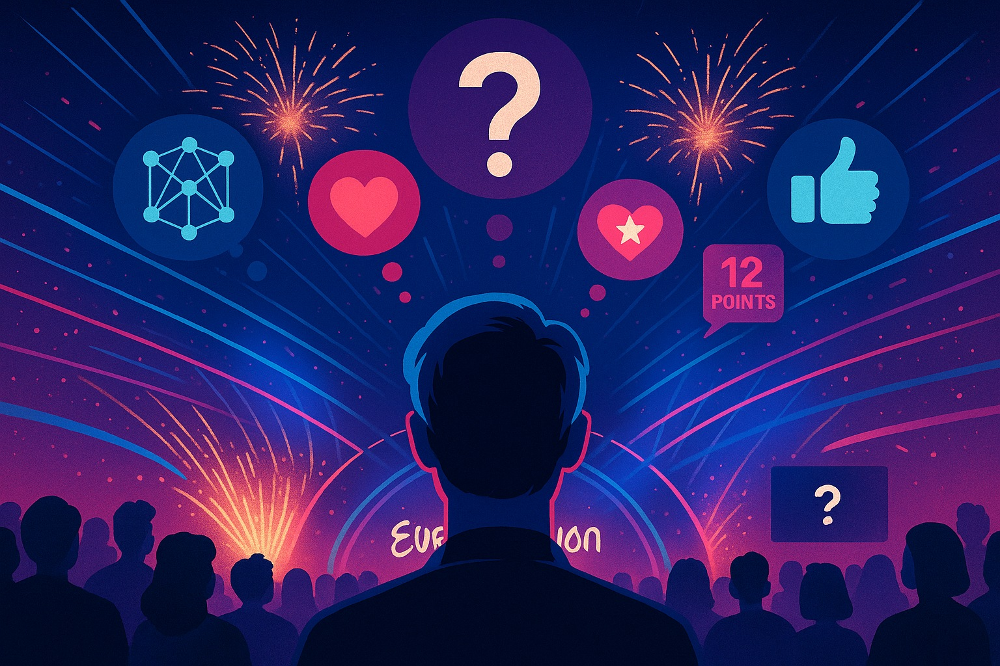
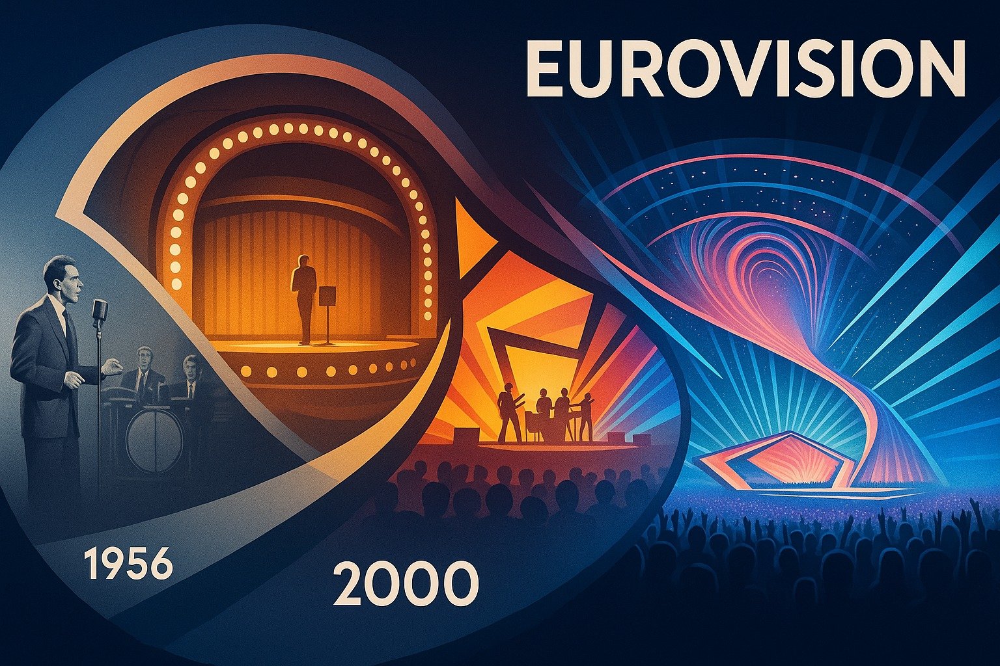
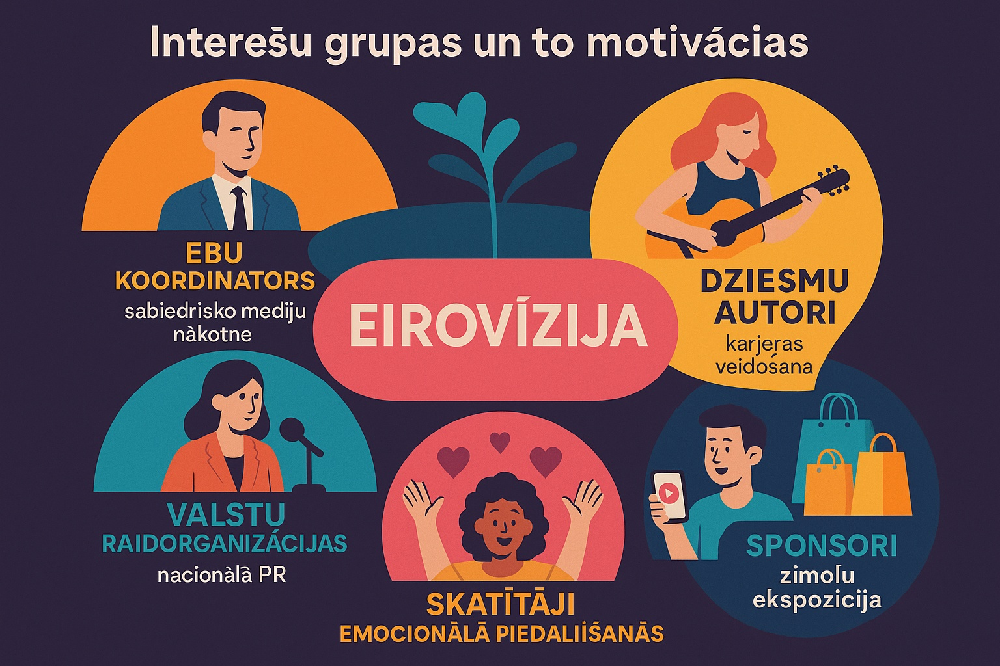
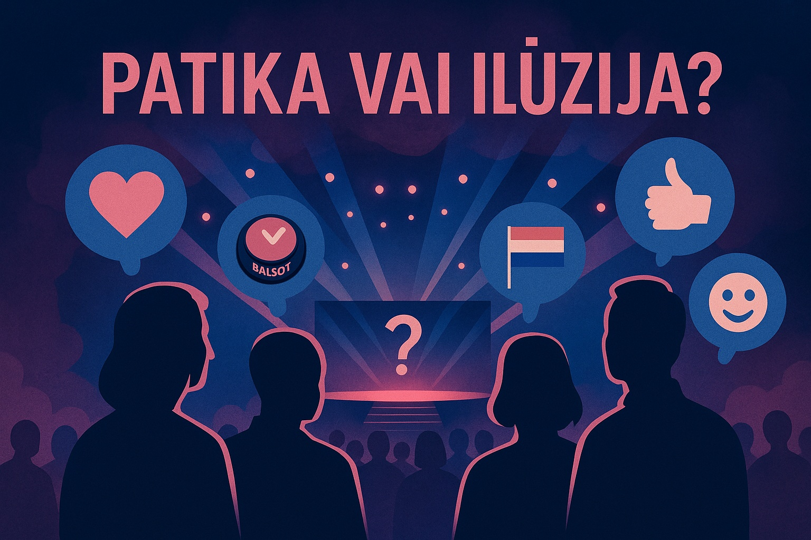
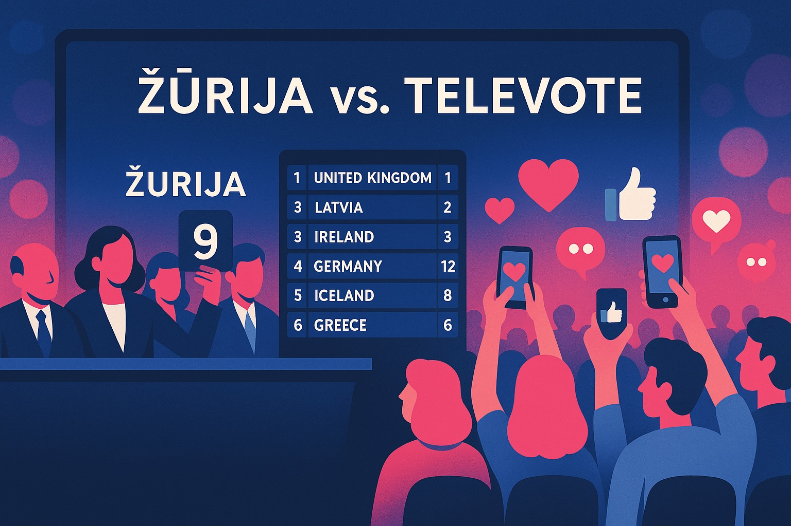
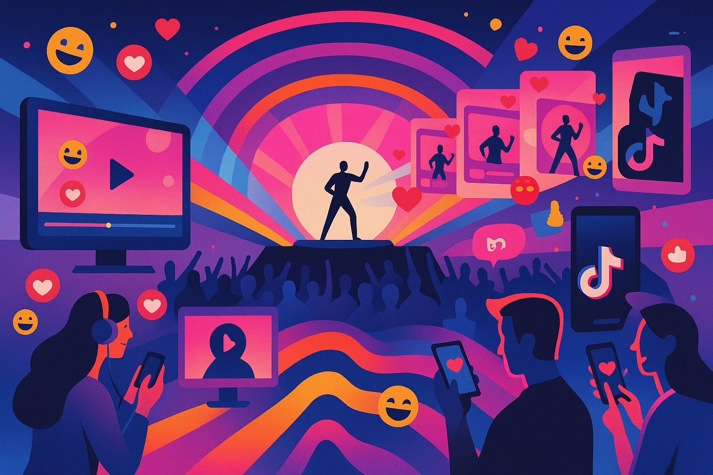
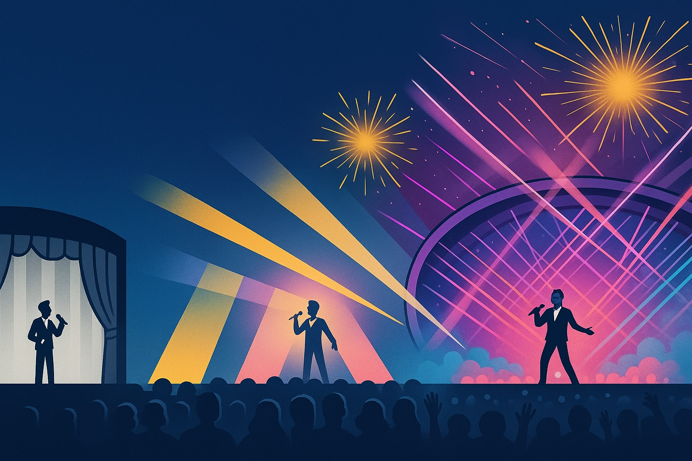
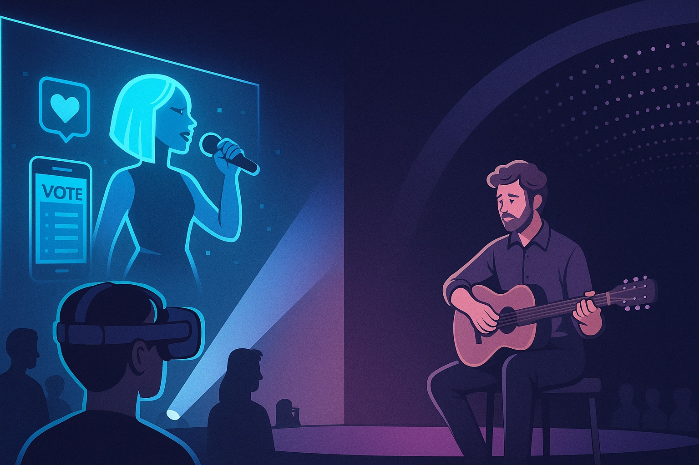
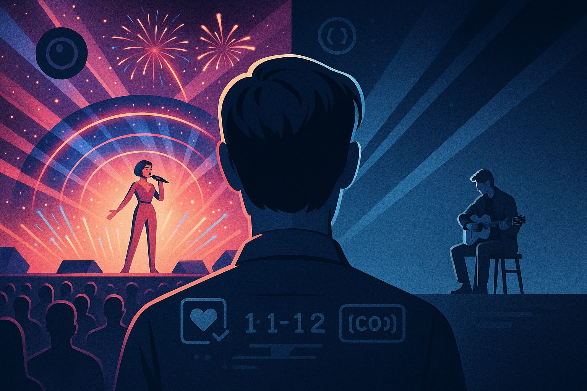

Eirovīzijas dziesmu konkurss bieži tiek prezentēts kā muzikāls notikums, kurā uz vienlīdzīgiem pamatiem sacenšas dažādu valstu labākie izpildītāji un dziesmu autori. Taču realitātē tas vairāk atgādina emocionāli un vizuāli pielādētu sociālu šovu, kur mūzika ir tikai viens no daudziem faktoriem.
Šajā rakstā tiks analizēts, kā Eirovīzija no mūzikas konkursa kļuvusi par emocionālas ietekmes algoritmu, kas ekspluatē psiholoģiskus mehānismus, mediju loģiku un kultūras identitāšu simboliku.

Eirovīzija de jure ir dziesmu konkurss, bet de facto — tas ir sociāli-psiholoģisks un mediju menedžēts fenomens. Rodas pretruna starp deklarēto mērķi (vērtēt dziesmas) un realitāti (vērtēšanas objekts ir tēls, valsts, stāsts, vizuālais iespaids u.c.).
Šī analīze balstīsies uz:
Pēc Otrā pasaules kara Eiropā valdīja vajadzība pēc sadarbības. 1950. gadā tika izveidota Eiropas Raidorganizāciju apvienība (EBU), lai apvienotu sabiedriskās televīzijas un radio organizācijas vienotā tīklā.
EBU mērķis bija ne tikai tehniskā sadarbība, bet arī kultūras un identitātes vienojošu projektu veidošana.
1956. gada 24. maijā Lugano (Šveicē) notika pirmais Eirovīzijas dziesmu konkurss ar tikai 7 valstīm un 14 dziesmām. Uzvarētājs bija Lys Assia no Šveices ar dziesmu "Refrain".
Sākotnējais mērķis bija veicināt raidošo tehnoloģiju attīstību. Mūzika kalpoja kā līdzeklis, nevis mērķis.

EBU ir lielākā sabiedrisko mediju alianse pasaulē, kas apvieno vairāk nekā 110 organizācijas no vairāk nekā 50 valstīm. Tā ir Eirovīzijas dziesmu konkursa oficiālā īpašniece un galvenā organizatore.
Katru gadu konkursa rīkošanu pārņem tās valsts raidorganizācija, kuras pārstāvis iepriekšējā gadā uzvarēja. Rīkotājvalsts bieži iegulda miljonus eiro, ko uzskata par prestižu iespēju uzlabot starptautisko tēlu.
Eirovīzijas sponsorsaraksts iekļauj zīmolus kā Moroccanoil, Booking.com, TikTok un Royal Caribbean. Sponsoru motivācija ir skaidra: Eirovīzija piedāvā piekļuvi daudzvalodu, LGBTQ+ iekļaujošai un globāli redzamai auditorijai.
EBU pozicionē Eirovīziju kā rīku kultūras apmaiņai. Taču realitātē EBU motivācija ir arī augsti reitingi un sabiedrisko mediju konkurētspēja digitālajā laikmetā.
Katras valsts sabiedriskā raidorganizācija iegulda Eirovīzijā, lai demonstrētu nacionālo tēlu un gūtu augstu auditorijas iesaisti.
Eirovīzija kalpo kā karjeras tramplīns. Pat neiekļūstot finālā, dalība sniedz miljoniem skatījumu un sadarbības iespējas.
Nav retums, ka dziesmas tiek pirktas vai rakstītas ārpus valsts — īpaši Zviedrijā, kur darbojas vesela "Eirovīzijas dziesmu ražošanas industrija".
Liela daļa auditorijas neskatās Eirovīziju mūzikas dēļ vien. Tā kļuvusi par gadskārtēju sociālu rituālu ar kopīgas skatīšanās ballītēm, humoristiskām memes un kopienas sajūtu.
Jo ekstrēmāks priekšnesums — jo vairāk reakcijas video, meme un diskusiju. Tā veidojas "meta-Eirovīzija", kur notikums dzīvo tālākos atvasinājumos.

Jau 1950. gados Salomons Ašs pierādīja, ka cilvēki mēdz pieņemt grupas viedokli, pat ja tas ir acīmredzami kļūdains. Ja auditorija aplaudē, komentētāji slavē un sociālie tīkli "deg", daudziem šķiet, ka viņiem arī vajadzētu patikt.
Psihologs Roberts Zajoncs pierādīja, ka cilvēkiem sāk patikt lietas, ko viņi biežāk redz vai dzird. Eirovīzijā šis efekts darbojas caur priekšskatījuma klipiem un vīrusa efektu. Rezultāts – atpazīstamība tiek sajaukta ar patiku.
Vienkāršas, atkārtojošas melodijas biežāk "iestrēgst galvā". Pētījumi (Kellaris 2003, Liikkanen 2012) rāda, ka cilvēki bieži domā, ka dziesma patīk, tikai tāpēc, ka to nevar aizmirst.
Eksperiments (Tsay, 2013, PNAS) pierādīja, ka cilvēki muzikālu izpildījumu vērtē augstāk, ja redz, nevis tikai dzird. LED ekrāni, kameras leņķi, kostīmi un gaismas kļūst par manipulatīviem līdzekļiem uztveres pārveidei.
Balsojums bieži nav par dziesmu, bet gan par valsti, identitāti vai solidaritāti. Skatītājs emocionāli iegulda cerības, lepnumu vai vilšanos — dziesmas kļūst par kolektīviem psiholoģiskiem trigeriem.
Daudzi skatītāji tic, ka viņiem dziesma patīk, taču patiesībā viņi reaģē uz apkārtējiem efektiem. Rodas emocionāls efekts, ko cilvēks interpretē kā "patiku", pat ja nav muzikālas rezonanses.

Eirovīzijas balsošanas sistēma ir mainījusies vairākas reizes. Kopš 2009. gada rezultāts veidojas kā 50% žūrijas + 50% skatītāju balsojums. 2023. gadā sistēma tika paplašināta, iekļaujot arī skatītājus no valstīm, kuras nepiedalās konkursā.
Pētījumi rāda, ka valstis nereti balso par "savējiem" — vai nu kultūras tuvuma, ģeogrāfijas vai diasporas dēļ. Feddersen & Maennig (2008) izveidoja modeli, kas pierāda sistēmiskus balsojuma blokus.
Žūrijas mēdz vērtēt tehnisko izpildījumu, vokālo kvalitāti un kompozīciju, savukārt skatītāji balso pēc tēla, harismas un vizuālā iespaida. Tas rada uzticības plaisu starp skatītājiem un sistēmu.
Lai gan Eirovīzija tiek prezentēta kā "tautas balsojums", realitātē balsošanas sistēma ir kompromiss. Žūrijas bieži darbojas kā "filtrs", kas neļauj uzvarēt pārāk pretrunīgiem priekšnesumiem.
Ja "mūsu dziesma" nesaņem punktus — tas tiek uztverts kā necieņa vai netaisnība. Šī uztvere stiprina kolektīvo identitāti un motivē skatīties atkal nākamgad.

Eirovīzijas dziesmai jāiekļaujas precīzā 3 minūšu formātā. Dziesmas bieži sākas ar refrēnu vai "lielo momentu", bez muzikālās izaugsmes vai dramatiskas struktūras.
Liela daļa autoru nāk no Zviedrijas, Dānijas un Lielbritānijas, kur darbojas t.s. Eirovīzijas dziesmu "nometnes". Tiek producētas formulētas, tehniski efektīvas dziesmas, kas paredzētas skatuvei.
Daļa mūziķu piedalās Eirovīzijā kā karjeras stratēģijas spēles dalībnieki. Dziesmu bieži izvēlas producenti vai nacionālās atlases komandas, nevis pats mākslinieks. Rezultātā uz skatuves parādās profesionālis, kurš izpilda emociju formulu.
Citi to dara ironiski vai konceptuāli — kā komentāru par pašu konkursu (piemēram, Käärijä 2023).
Daudzās dziesmās atkārtojas līdzīgas harmoniskās progresijas (piemēram, I–V–vi–IV). Bieži tiek izmantots "modulācijas triks" — pēkšņa toņa maiņa augstākā tonalitātē pirms fināla refrēna.
Skatuves noformējums kļūst par centrālo emocionālās ietekmes līdzekli. Mūzika tiek pakļauta scenogrāfijai — nevis skaņa veido tēlu, bet tēls diktē, kādai jābūt skaņai.
Notiek tematiska atkārtošanās, kurā dziesmas imitē iepriekšējo gadu uzvarētājus. Tā veidojas droša un paredzama kultūras produkcija.
Eirovīzija vairs nav tikai skatīšanās pasākums — tā ir multikanālu pieredze: TV tiešraide, Twitter komentāri, TikTok klipi un YouTube straumes vienlaikus.
Dziesmas nereti kļūst populāras pirms konkursa, pateicoties algoritmiem. "TikTok dziesmas" fenomens kļūst arvien izteiktāks — tiek meklēts moments, kas var izraisīt "viralitāti".
Bieži Eirovīzijas dziesmas iegūst miljoniem skatījumu YouTube, bet nedaudzus tūkstošus klausījumu Spotify. Tas norāda uz šova efektu: skatīšanās ir galvenā pieredze.
Kopš 2015. gada konkursā piedalās arī Austrālija. 2023. gadā ieviests "Rest of the World" tele balsošana. Organizatori sadarbojas ar starptautiskiem zīmoliem.
Reklāma kļūst integrēta estētikā — skatītājs neredz baneri, bet gan "pieredz zīmolu" kā daļu no šova.

Katrs nākamais konkurss cenšas pārspēt iepriekšējo. Piemēram, 2012. gada Baku konkurss izmaksāja vairāk nekā 150 miljonus eiro. Šī tendence norāda uz ekskluzivitātes un pompozuma pieaugumu.
Ik gadu dziesmas un priekšnesumi kļūst skaļāki, dīvaināki vai vizuāli ekstrēmāki. "Normāla, muzikāli niansēta dziesma" riskē būt invisible.
Eirovīzijas vēsturē bijušas vairākas diskvalifikācijas un protesti: Krievijas izslēgšana (2022), Izraēlas dalība un politiskās debates (2024). Šie notikumi parāda, ka konkurss kļūst par ideoloģiskās cīņas lauku.
Laiku pa laikam uzvar patiesi muzikāli darbi: "Amar Pelos Dois" (2017), "Stefania" (2022). Taču šie gadījumi kļūst par izņēmumiem, kas apstiprina noteikumu.

Profesionāli mūziķi un žurnālisti pauž bažas, ka muzikālā kvalitāte ir upurēta par labu šovam. Kritiķi jautā: vai Eirovīzija joprojām ir mūzikas konkurss?
EBU regulāri ievieš tehniskas un balsošanas korekcijas. Taču šīs reformas reti ietekmē paša satura būtību. Šova modelis paliek nemainīgs.
Nākotnē var parādīties VR/AR tiešraides un personificēta balsošana ar AI palīdzību. EBU 2025. gadā izsludināja noteikumu, kas aizliedz AI pilnībā ģenerētas dziesmas.
Šobrīd nav indikāciju par masveida apziņas maiņu. Eirovīzijas skatītāju skaits pieaug, īpaši sociālajos tīklos. Un kamēr tas notiek, sistēma saglabājas.
Secinājums: Eirovīzija mainās virspusē, bet tās pamatkods paliek nemainīgs — tā ir emocionālas ietekmes mašīna, kas simulē muzikālu izvērtējumu.

Eirovīzijas dziesmu konkurss ir kļuvis par vienu no visilgāk pastāvošajiem un visplašāk skatītajiem popkultūras notikumiem pasaulē. Taču tas ir transformējies par emocionāli koreģētu, mediju menedžētu un vizuāli ekspluatētu šovu.
Tā balstās uz psiholoģiskiem mehānismiem — konformitāti, atpazīstamības efektu, vizuālās dominances ietekmi, piederības ilūziju un simbolisku patriotismu.
Un tomēr — tā darbojas. Eirovīzijas "kods" ir optimizēts kultūras produkts, kas sniedz skatītājam tieši to, ko viņš meklē: trīs minūtes emocionāla sprādziena.
Bet šī koda izpratne ir iespēja skatīties ar apzinātu ironiju vai estētisku distanci. Jo tikai tad, kad mēs saprotam, kā tiek radīta patikas ilūzija, mēs varam izvēlēties, vai ļauties tai vai pārslēgt kanālu.
Jo varbūt patiesi kvalitatīva dziesma joprojām var uzvarēt — bet tikai tad, ja mēs zinām, ko klausāmies.

The Eurovision Song Contest is often presented as a musical event in which the best performers and songwriters from different countries compete on equal terms. In reality, however, it resembles an emotionally and visually loaded social show, where music is just one of many factors.
This article analyses how Eurovision has evolved from a music competition into an algorithm of emotional influence that exploits psychological mechanisms, media logic and the symbolism of cultural identities.
Eurovision is de jure a song contest, but de facto — it is a social-psychological, media-managed phenomenon. A contradiction arises between the declared goal (evaluating songs) and reality (the object of evaluation is the image, the country, the story, the visual impression, etc.).
This analysis draws on:
After the Second World War, Europe was driven by a need for cooperation. In 1950, the European Broadcasting Union (EBU) was established to unite public television and radio organisations into a single network.
EBU's goal was not only technical cooperation, but also the creation of projects that unite culture and identity.
On 24 May 1956 in Lugano, Switzerland, the first Eurovision Song Contest was held with just 7 countries and 14 songs. The winner was Lys Assia from Switzerland with "Refrain".
The original goal was to promote broadcasting technology development. Music served as a means, not an end.
The EBU is the world's largest public media alliance, uniting more than 110 organisations from more than 50 countries. It is the official owner and principal organiser of the Eurovision Song Contest.
Each year the contest is hosted by the broadcaster of the country whose representative won the previous year. The host country frequently invests millions of euros, regarded as a prestigious opportunity to improve its international image.
Eurovision's sponsor list includes brands such as Moroccanoil, Booking.com, TikTok and Royal Caribbean. The sponsors' motivation is clear: Eurovision offers access to a multilingual, LGBTQ+ inclusive and globally visible audience.
The EBU positions Eurovision as a tool for cultural exchange. In reality, however, EBU's motivation also includes high ratings and the competitiveness of public media in the digital age.
Each country's public broadcaster invests in Eurovision to demonstrate its national image and achieve high audience engagement.
Eurovision serves as a career springboard. Even without reaching the final, participation brings millions of views and collaboration opportunities.
It is not uncommon for songs to be bought or written outside the country — especially in Sweden, where an entire "Eurovision song production industry" operates.
A large portion of the audience does not watch Eurovision solely for the music. It has become an annual social ritual with group viewing parties, humorous memes and a sense of community.
The more extreme the performance, the more reaction videos, memes and discussions. A "meta-Eurovision" forms in which the event lives on in derivatives.
As early as the 1950s, Solomon Asch demonstrated that people tend to adopt the group's view, even when it is obviously wrong. If the audience applauds, commentators praise and social media "burns", many feel they ought to like it too.
Psychologist Robert Zajonc showed that people begin to like things they see or hear more often. In Eurovision this effect operates through preview clips and viral spread. Result — familiarity is confused with liking.
Simple, repetitive melodies more often "get stuck in the head". Research (Kellaris 2003, Liikkanen 2012) shows that people often think they like a song simply because they cannot forget it.
An experiment (Tsay, 2013, PNAS) showed that people rate a musical performance higher when they see it rather than just hear it. LED screens, camera angles, costumes and lighting become manipulative instruments for reshaping perception.
Voting is often not about the song, but about a country, identity or solidarity. Viewers emotionally invest hopes, pride or disappointment — songs become collective psychological triggers.
Many viewers believe they like a song, but are actually reacting to surrounding effects — the story, the image, the language, the volume. An emotional effect arises that the person interprets as "liking", even when there is no musical resonance.
Since 2009, the result has been formed as 50% jury + 50% viewer vote. In 2023 the system was expanded to include viewers from non-participating countries.
Research shows that countries tend to vote for "their own" — due to cultural affinity, geography or diaspora. Feddersen & Maennig (2008) created a model demonstrating systematic voting blocs.
Juries tend to assess technical performance, vocal quality and composition, while viewers vote based on image, charisma and visual impression. This creates a credibility gap between viewers and the system.
Although Eurovision is presented as a "people's vote", in reality the voting system is a compromise. Juries often act as a "filter" preventing overly controversial performances from winning.
If "our song" does not receive points — it is perceived as disrespect or injustice. This perception strengthens collective identity and motivates viewers to watch again next year.
A Eurovision song must fit within a precise 3-minute format. Songs often start with the chorus or the "big moment", with no musical build-up or dramatic structure.
A large proportion of songwriters come from Sweden, Denmark and the UK, where so-called Eurovision song "camps" operate. Formulaic, technically effective songs are produced, designed for the stage rather than home listening.
Some musicians participate in Eurovision as players in a career strategy game. The song is often chosen by producers or national selection committees, not the artist themselves. The result is a professional executing an emotion formula on stage.
Others do it ironically or conceptually — as a commentary on the contest itself (e.g. Käärijä 2023).
Many songs repeat similar harmonic progressions (e.g. I–V–vi–IV). The "modulation trick" — a sudden key change to a higher tonality before the final chorus — is frequently employed to create an illusory drama effect.
Stage design becomes the central instrument of emotional impact. Music is subordinated to scenography — it is not the sound that shapes the image, but the image that dictates what the sound should be.
Thematic repetition occurs as songs imitate previous winners. This produces safe and predictable cultural production.
Eurovision is no longer merely a viewing event — it is a multi-channel experience: TV live stream, Twitter comments, TikTok clips and YouTube streams all simultaneously.
Songs and performances often become popular before the contest, thanks to algorithms. The "TikTok song" phenomenon is growing — the sought-after moment is one that can trigger virality, not lasting musical impact.
Eurovision songs frequently gain millions of YouTube views but few thousand Spotify listens. This points to the show effect: watching is the primary experience, not music appreciation.
Since 2015, Australia has participated. In 2023 "Rest of the World" televoting was introduced, making Eurovision a global brand. Organisers partner with international brands to expand reach beyond traditional viewers.
Advertising becomes integrated into aesthetics — the viewer does not see a banner, but rather "experiences the brand" as part of the show.
Each successive contest strives to surpass the previous one. For example, the 2012 Baku contest cost Azerbaijan more than €150 million. This trend indicates a growing exclusivity and pomposity.
Year on year, songs and performances become louder, stranger or visually more extreme. A "normal, musically nuanced song" risks being invisible.
Eurovision history includes several disqualifications and protests: Russia's exclusion after the invasion of Ukraine (2022), Israel's participation and political debates (2024). These events show that the contest is becoming a battleground for ideological conflict.
From time to time, genuinely musical works win: "Amar Pelos Dois" (Portugal, 2017) and "Stefania" (Ukraine, 2022). But these cases become exceptions that prove the rule.
Many professional musicians and journalists voice concern that musical quality has been sacrificed for the show. Critics ask: is Eurovision still a music contest?
EBU regularly introduces technical and voting corrections. But these reforms rarely affect the essence of the content itself. The show model remains unchanged.
In the future, VR/AR live streams and AI-assisted personalised voting may emerge. In 2025 EBU announced a rule banning fully AI-generated songs.
There are currently no signs of mass consciousness change. Eurovision viewership is growing, especially on social media. And as long as that continues, the system endures.
Conclusion: Eurovision changes on the surface, but its core code remains unchanged — it is an emotional impact machine that simulates musical evaluation.
The Eurovision Song Contest has become one of the world's longest-running and most widely watched pop-culture events. But it has not remained faithful to its original promise — to be a musical competition. Instead, Eurovision has transformed into an emotionally engineered, media-managed and visually exploited show, where songs are often merely a platform, not content.
It rests on psychological mechanisms — conformity, the familiarity effect, the influence of visual dominance, the illusion of belonging and symbolic patriotism.
And yet — it works. Eurovision's "code" is an optimised cultural product that gives viewers exactly what they seek: three minutes of emotional explosion.
But understanding this code is an opportunity to watch with conscious irony or aesthetic distance. Because only when we understand how the illusion of liking is created can we choose whether to surrender to it or change the channel.
Because perhaps a truly quality song can still win — but only if we know what we are listening to.